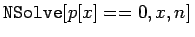
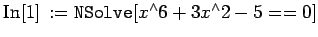
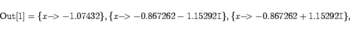
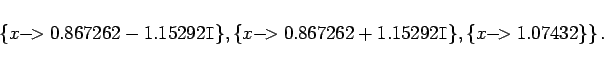

Inhalt Index DeskTop Bronstein

 Numerische Mathematik Nutzung von Computern Anwendung von Computeralgebrasystemen Mathematica
Numerische Mathematik Nutzung von Computern Anwendung von Computeralgebrasystemen Mathematica


Wie im Abschnitt Mathematica (Kapitel Lösung von Gleichungen und Gleichungssystemen) gezeigt wird, kann Mathematica die Nullstellen von Polynomen numerisch bestimmen. Dazu dient die Anweisung , wobei n die Genauigkeit vorgibt, mit der die Bestimmung erfolgen soll. Läßt man n weg, so wird mit Maschinengenauigkeit gerechnet. Man erhält stets den vollständigen Satz der Lösungen, also  , wenn es sich um ein Polynom m-ten Grades handelt.
, wenn es sich um ein Polynom m-ten Grades handelt.
| Beispiel |
|
 

|